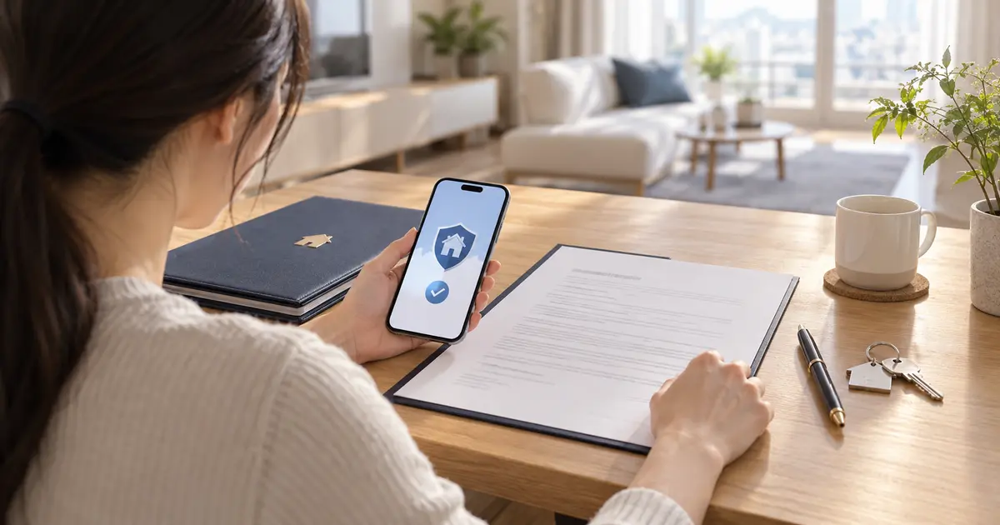
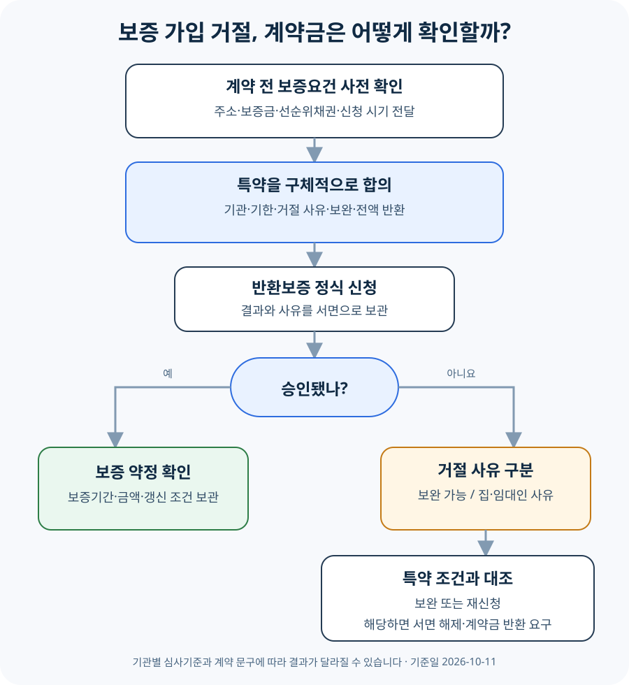

전세보증 가입이 안 되면 계약금을 돌려받을 수 있을까?

전세보증금반환보증 가입이 거절됐다는 사실만으로 임대차계약이 자동 해제되거나 계약금이 당연히 반환되는 것은 아닙니다. 계약서에 반환보증 가입을 계약의 조건으로 삼고, 어떤 기관의 심사에서 어떤 사유로 거절될 때 계약을 해제하고 계약금을 돌려주는지 합의했다면 그 특약에 따라 처리할 근거가 생깁니다. 계약 전에는 보증기관과 신청기한·대상 사유·임대인의 협조·반환기한을 적고, 이미 거절됐다면 먼저 보증기관의 서면 사유를 받아 특약과 대조한 뒤 임대인에게 서면으로 해제와 반환을 요구하세요.
먼저 ‘반환보증’과 ‘전세대출 보증’을 구분하세요
전세보증금반환보증은 임대차가 끝났는데 임대인이 보증금을 돌려주지 못할 때 보증기관이 약정 범위에서 임차인에게 보증금을 지급하고 임대인에게 구상하는 상품입니다. 주택도시보증공사(HUG)는 국토교통부 산하 공기업으로, 주택 관련 각종 보증을 운영합니다. 한국주택금융공사(HF)는 주택금융을 지원하는 공공기관으로 전세대출 보증과 전세지킴보증 등을 운영합니다.
반면 전세대출 보증은 임차인이 은행에서 전세자금을 빌릴 때 대출금 상환 위험을 보증하는 장치입니다. 대출이 승인됐다고 반환보증까지 승인된 것은 아니고, 반환보증이 가능해 보여도 은행의 대출 심사는 별도로 남아 있을 수 있습니다. 계약서에 ‘보증보험’이라고만 쓰면 어느 보증을 뜻하는지 다툼이 생길 수 있으므로 전세보증금반환보증이라고 적는 편이 분명합니다.
법제처 찾기쉬운 생활법령정보는 반환보증의 대표적인 확인사항으로 대항력과 확정일자, 주택가격 대비 보증금·선순위채권, 등기부상 권리침해, 임대인의 보증 제한 여부 등을 안내합니다. 기관과 상품에 따라 신청인·주택·계약 요건이 다르므로 집 주소와 계약 조건을 넣은 사전 확인이 필요합니다.
가입 거절만으로 계약금이 자동 반환되지는 않습니다
전세계약은 임대인이 집을 사용하게 하고 임차인이 차임이나 보증금을 지급하기로 한 당사자 간 약속입니다. 반환보증은 그 계약과 별도로 보증기관이 심사해 맺는 계약입니다. 따라서 임차인이 기대한 보증에 가입하지 못했다는 사정만으로 이미 체결한 임대차가 저절로 사라지는 것은 아닙니다.
계약서에 관련 합의가 없다면 임차인이 일방적으로 계약을 포기했을 때 계약금 반환을 두고 분쟁이 생길 수 있습니다. 민법 제565조는 다른 약정이 없고 당사자 한쪽이 이행에 착수하기 전이면 계약금을 준 사람이 이를 포기해 계약을 해제할 수 있도록 합니다. 그러나 실제 계약에서는 중도금 지급, 입주 준비, 계약서의 위약금 조항과 상대방의 이행 경과가 함께 문제 됩니다.
반대로 임대인과 임차인이 ‘반환보증 가입이 되지 않으면 계약을 해제하고 계약금을 전액 반환한다’는 조건을 구체적으로 합의했다면 계약 내용을 판단하는 중요한 근거가 됩니다. 민법 제105조는 당사자가 임의규정과 다른 의사를 표시하면 그 의사에 따르도록 정합니다. 다만 특약이 있어도 임대인이 바로 돈을 보내지 않으면 협의·조정·소송 등 반환을 실제로 받아내는 절차가 따로 필요할 수 있습니다.
| 계약 내용과 거절 상황 | 계약금 판단 | 먼저 확인할 것 |
|---|---|---|
| 반환보증 관련 특약이 없음 | 거절만으로 자동 반환된다고 보기 어렵습니다 | 계약금·해제·위약금 조항, 이행 경과 |
| ‘보증보험 불가 시 반환’만 기재 | 어느 기관·어떤 사유인지 해석 다툼이 남습니다 | 계약 당시 설명, 문자, 거절 사유와 시점 |
| 기관·기한·사유·전액 반환을 구체적으로 합의 | 특약 조건을 충족했다면 해제·반환 근거가 강해집니다 | 정식 신청과 거절 증빙, 통보기한 |
| 임차인이 신청을 늦추거나 서류를 내지 않음 | 특약이 있어도 적용이 어려울 수 있습니다 | 신청기한, 임차인 책임 제외 문구 |
| 단순 변심 또는 예상보다 높은 보증료 | 가입 ‘불가’와 같다고 단정할 수 없습니다 | 특약이 보증료·상품조건까지 포함하는지 |
집과 권리관계 때문에 거절될 수도, 신청 조건 때문에 막힐 수도 있습니다
보증 가입이 어렵다는 말을 들으면 곧바로 ‘깡통전세’라고 단정하기 쉽습니다. 그러나 원인은 하나가 아닙니다. 집값에 비해 보증금과 선순위채권이 큰 경우처럼 위험과 직접 연결된 사유가 있는가 하면, 신청 시기·서류·상품 대상이 맞지 않아 보완 또는 다른 상품 확인이 필요한 경우도 있습니다.
- 주택가격과 선순위채권: 보증금과 선순위 권리가 기관의 인정 주택가격·한도 안에 들어오는지 봅니다.
- 등기부상 권리침해: 경매개시결정, 압류·가압류, 가처분, 가등기 등이 있으면 제한될 수 있습니다.
- 임대차계약 내용: 계약기간, 보증금, 임대인과 소유자의 일치, 반환채권 양도·질권 관련 문구 등을 확인합니다.
- 임차인의 보호요건: 전입신고·점유·확정일자와 신청 시기를 확인해야 합니다.
- 기관별 이용 조건: HF의 일부 반환보증은 HF 전세자금보증 이용자 또는 동시 신청자를 대상으로 합니다. 한 기관에서 대상이 아니라고 다른 기관도 모두 같은 결론인 것은 아닙니다.
HUG 전세보증금반환보증 안내와 HF 일반전세지킴보증 안내를 보면 대상과 신청요건이 서로 다릅니다. 그래서 특약에 HUG만 적을지, HUG·HF·SGI 가운데 임차인이 선택한 반환보증기관을 적을지는 계약 당사자가 미리 정해야 합니다. 어느 기관이든 승인된다고 장담하는 문구보다, 정식 심사 결과 가입이 불가능한 경우의 처리를 정하는 것이 현실적입니다.

“보증보험 안 되면 반환”보다 더 구체적으로 적으세요
특약은 인터넷 예문을 계약서에 복사하는 일이 아니라 임대인과 임차인이 위험을 어떻게 나눌지 합의하는 과정입니다. 임대인은 임차인의 단순 변심까지 떠안고 싶지 않고, 임차인은 집이나 임대인의 문제로 보증에 가입하지 못했는데 계약금을 잃고 싶지 않습니다. 아래 내용을 계약 전에 서로 확인하면 범위를 분명하게 만들 수 있습니다.
- 보증의 이름과 기관: ‘전세보증금반환보증’임을 적고 HUG·HF·SGI 중 적용 범위를 정합니다.
- 신청기한: 계약일부터 언제까지 임차인이 신청해야 하는지, 잔금·입주 전 확인이 가능한지 정합니다.
- 대상이 되는 거절 사유: 주택가격, 선순위채권, 권리침해, 임대인 제한 등 목적물·임대인 사유를 구체적으로 합의합니다.
- 보완 기회: 서류 누락처럼 고칠 수 있는 사유라면 누가 언제까지 보완할지 정합니다.
- 임대인의 협조: 필요한 서류 제출, 사실 확인, 보증금 조정이나 선순위채권 정리 가능 여부를 적습니다.
- 해제와 반환: 조건이 충족되면 별도 위약금 없이 계약을 해제하고 계약금 전액을 언제까지 어떤 계좌로 돌려주는지 적습니다.
- 제외 사유: 임차인의 신청 지연·서류 미제출·자격 미충족·단순 변심을 어떻게 처리할지 정합니다.
신청 전부터 보증기관 상담에서 “가입 불가”라는 말을 들었다면 구두 답변만으로 계약하지 마세요. 주소, 보증금, 계약기간, 선순위채권을 전달했는지 확인하고, 가능하면 사전 확인 결과와 전제조건을 기록하세요. 최종 승인은 정식 서류 심사 뒤 달라질 수 있다는 점도 임대인과 공유해야 합니다.
같은 ‘가입 거절’이라도 계약금 결론은 달라질 수 있습니다
전세보증금 3억원, 계약금 3천만원인 아파트를 계약했다고 가정하겠습니다. 계약서에는 “HUG 반환보증 가입 불가 시 계약금 반환”이라고만 적혀 있습니다. 임차인이 신청하자 등기부상 가압류 때문에 가입이 어렵다는 안내를 받았습니다. 이 경우 임차인은 거절 사실과 가압류라는 사유를 문서로 받아 임대인에게 즉시 통지하고, 특약의 ‘가입 불가’에 해당한다는 근거로 해제·반환을 요구할 수 있습니다. 다만 임대인이 가압류를 곧 말소해 가입 가능 상태로 만들겠다고 하면 특약이 보완기간을 허용하는지, 당사자가 어떤 의도로 문구를 넣었는지가 쟁점이 될 수 있습니다.
다른 상황을 보겠습니다. 집과 임대인에는 문제가 없지만 임차인이 신청기한을 놓치거나 필요한 서류를 내지 않아 접수가 종결됐다면, 이를 주택 때문에 보증 가입이 거절된 경우와 똑같이 보기는 어렵습니다. 특약에 임차인의 성실한 신청과 제외 사유가 적혀 있으면 판단이 더 분명해집니다.
보증금이 기관 한도를 조금 넘는 경우도 있습니다. 임대인과 보증금을 낮추거나 월세로 일부 전환하면 가입 가능성이 생길 수 있지만 임차인이 일방적으로 조건을 바꿀 수는 없습니다. 보증금·월세·계약금 처리·잔금일을 다시 합의했다면 기존 계약서에 손으로 덧붙이기만 하지 말고 당사자 서명 또는 별도 합의서로 남기세요.
이미 계약하고 거절됐다면 이 순서로 움직이세요
- 정식 거절 사유를 받습니다. 단순 상담인지 실제 신청 결과인지 구분하고, 기관·신청일·사유·보완 가능 여부가 보이게 남깁니다.
- 계약서 전체와 설명 자료를 모읍니다. 특약뿐 아니라 계약금·잔금·해제 조항, 중개대상물 확인·설명서, 문자와 광고 내용을 함께 봅니다.
- 사유를 나눕니다. 집·임대인 문제인지, 임차인 자격이나 서류 문제인지, 보완 또는 다른 기관 신청이 가능한지 확인합니다.
- 특약의 기한과 통보 방법을 지킵니다. 임대인과 중개사에게 전화만 하지 말고 문자·전자우편·내용증명 등 도달을 확인할 수 있는 방식으로 알립니다.
- 해제와 반환을 한 문서로 정리합니다. 계약 해제일, 반환 금액·기한·계좌, 열쇠나 서류 반환, 서로 추가 청구가 있는지를 적습니다.
- 잔금 지급이나 입주를 독단적으로 진행하지 않습니다. 특약에 따른 해제를 주장하면서 잔금을 치르고 입주하면 법률관계가 복잡해질 수 있습니다.
- 반환을 거부하면 분쟁조정이나 법률상담을 검토합니다. 주택임대차분쟁조정위원회 또는 대한법률구조공단에서 계약서와 증빙을 바탕으로 절차를 확인할 수 있습니다.
특약이 없다고 해서 언제나 임차인이 계약금을 잃는다고 단정할 수도 없습니다. 임대인이 중요한 권리관계나 보증 가입을 막는 사정을 사실과 다르게 설명했는지, 중개 과정에서 어떤 확인·설명이 있었는지, 계약 목적을 달성할 수 없는 사정이 누구에게서 생겼는지에 따라 다른 법적 쟁점이 생길 수 있습니다. 큰 금액을 포기하거나 잔금을 지급하기 전에 계약서 원문과 증거를 가지고 개별 상담을 받으세요.
자주 묻는 질문
HUG에서 거절되면 HF나 SGI에 신청하면 되나요?
기관별 상품 대상과 심사기준이 달라 다른 선택지를 확인할 수는 있습니다. 하지만 한 기관의 거절이 다른 기관의 승인을 보장하지 않고, 계약서가 특정 기관을 정했다면 다른 기관 신청으로 특약 조건이 충족되는지도 문구에 따라 달라집니다. 먼저 거절 사유와 각 기관의 대상 요건을 비교하세요.
집주인이 “가입된다”고 말했는데 실제로 거절됐습니다
말만으로 자동 반환된다고 단정하기 어렵습니다. 누가 어떤 자료를 바탕으로 무엇을 보장했는지, 계약서 특약과 문자·녹취·중개 설명에 어떻게 남았는지 확인해야 합니다. 보증 승인은 보증기관이 결정하므로 계약 전에는 집주인의 장담보다 공식 사전 확인과 구체적인 특약을 준비하세요.
보증 가입 전에 잔금을 치르고 전입신고해야 하나요?
상품에 따라 전입신고·점유·확정일자 등 보증에 필요한 요건과 신청 가능 시기가 있습니다. 그렇다고 잔금을 먼저 지급하면 무조건 승인된다는 뜻은 아닙니다. 계약 전에 해당 기관에 신청 시기와 사전 확인 방법을 묻고, 승인 전 위험을 계약서에서 어떻게 처리할지 합의하세요.
계약금을 돌려받지 못하면 어디에 상담하나요?
주택임대차분쟁조정위원회는 임대차 분쟁을 조정하는 기관입니다. 계약 해제와 반환 청구의 법적 판단이 필요한 경우 대한법률구조공단이나 변호사 상담도 검토하세요. 계약서, 송금내역, 보증기관 결과, 당사자 간 메시지를 빠짐없이 준비하면 좋습니다.
공식 자료
- 국가법령정보센터 — 민법 제105조(임의규정)
- 국가법령정보센터 — 민법 제565조(해약금)
- 주택도시보증공사 — 전세보증금반환보증 안내
- 한국주택금융공사 — 일반전세지킴보증 안내
- 법제처 찾기쉬운 생활법령 — 전세보증금반환보증
- 주택임대차분쟁조정위원회
정보 기준일: 2026-10-11. 이 글은 전세보증금반환보증 가입 거절과 계약금 처리에 관한 일반적인 확인 순서를 설명합니다. 실제 반환 여부는 계약서 문구, 보증 신청 경과, 거절 사유, 당사자의 설명과 이행 상황에 따라 달라질 수 있습니다. 보증기관의 상품요건은 바뀔 수 있으므로 신청일의 공식 기준을 다시 확인하고, 계약 해제나 큰 금액 반환 결정은 개별 법률상담을 거치세요.
계약 전에 보증금 위험을 확인하세요
- 전세가율 계산기집값과 보증금을 넣어 전세가율 점검
- 전세계약 체크리스트등기부·특약·전입신고 순서 확인